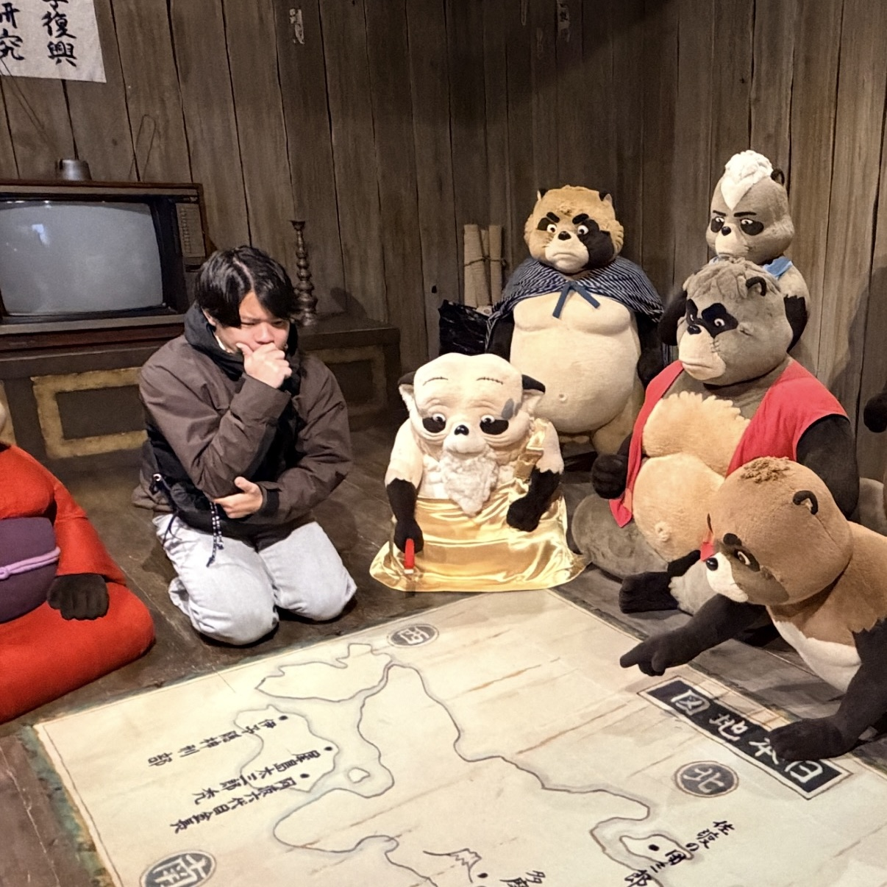

PLAYER 1
森岡 健吾 / KENGO

- しごと
- 2026年2月にフリーランスのAIコンサルとして独立
- とくせい
- 普段はゆるゆるだが、大事なところは非常に計画的。ポイント・マイル活用の達人
- そうび
- 独立してから買ったMacbook AirとiPad Air、多数の周辺機器を持ち運ぶ。そのため肩こりと腰痛が悩みの種
- たいせつ
- 仕事道具とガジェットポーチ。机の上はひどい有様だが、ポーチの中だけは整理整頓されている
- すき
- 萌ちゃんの作る料理はいつもおいしい。地元も名古屋も食が合うのでありがたい